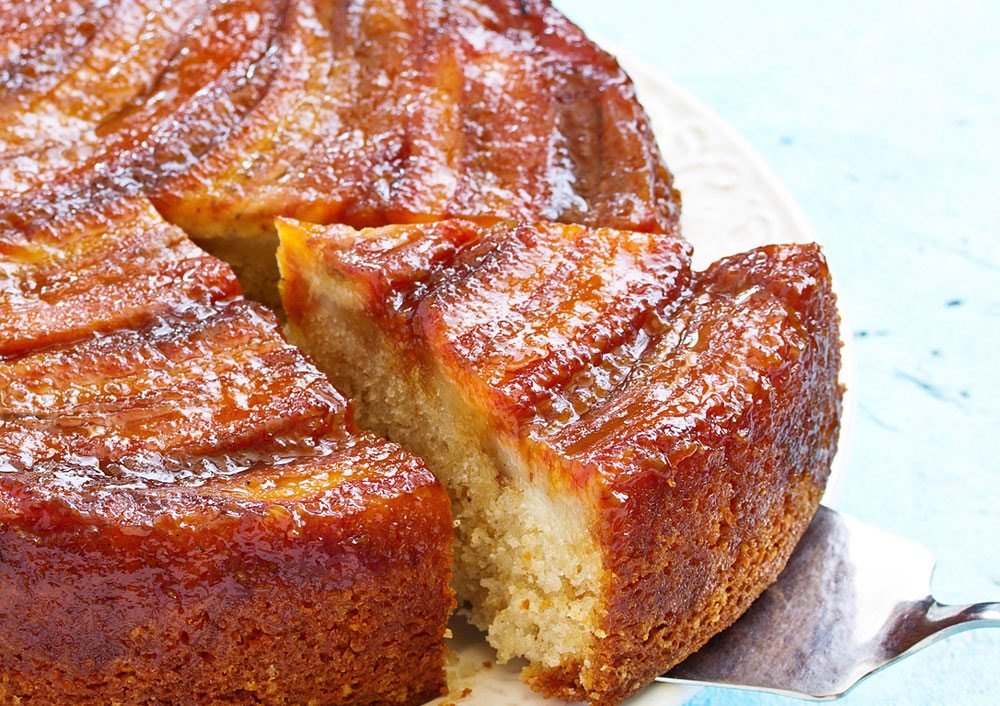

Receita bolo de banana com canela
Que tal fazer um bolo delicioso para tomar aquele café da tarde junto com um amigo? Essa receita de bolo de banana é com certeza a melhor escolha. Esse bolo de banana é com certeza o melhor que você já experimentou. O melhor de tudo é que esse bolo de banana é muito simples de ser feito e você pode fazer a qualquer momento.

Tempo de preparo: Até 1 hora
Serve: Até 10 porções
Ingredientes
- 2 ovos;
- 1/2 xícara de óleo;
- 2 xícaras de chá de açúcar;
- 2 xícaras de chá de farinha de trigo;
- 1/2 colher de sopa de canela em pó;
- 2 xícaras de chá de açúcar;
- 2 bananas nanicas;
Modo de Preparo
- Na batedeira bata primeiro o óleo, os ovos e o açúcar. Bater até formar uma massa lisa.
- Depois acrescente as bananas aos poucos, em pedaços, em seguida a farinha de trigo e a canela, bata bem.
- A massa ficará bem consistente.
- Por último acrescente o fermento em pó misturando delicadamente.
- Assar por 30 minutos em forma redonda untada com manteiga a 220ºC.
- Finalize retirando do forno, e bom apetite!